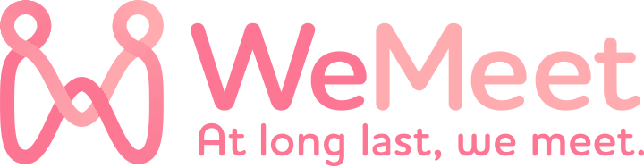
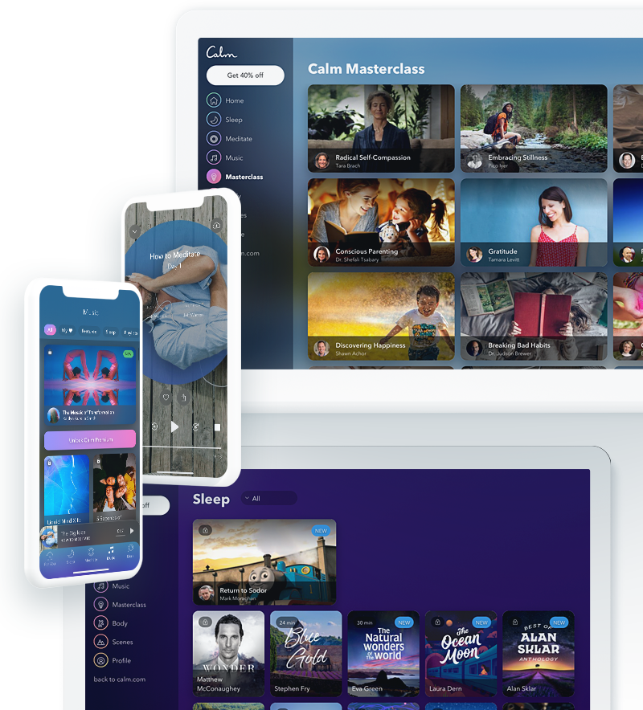
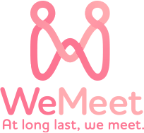

<!DOCTYPE html>
<html lang="ja">
<head prefix="og: http://ogp.me/ns# fb: http://ogp.me/ns/fb# article: http://ogp.me/ns/article#">
  <meta name="robots" content="noindex, nofollow, noarchive">
  <meta charset="utf-8">
  <!-- telephone number not work -->
  <meta name="format-detection" content="telephone=no">
  <!-- IE compatibility not work -->
  <meta http-equiv="X-UA-Compatible" content="IE=edge">
  <meta name="viewport" content="width=device-width, initial-scale=1.0">
  <title></title>
  <meta name="description" content="">
  <!-- FB -->
  <meta property="og:url" content="">
  <meta property="og:title" content="">
  <meta property="og:type" content="website">
  <meta property="og:image" content="">
  <meta property="og:site_name" content="">
  <meta property="og:description" content="">
  <meta property="og:locale" content="ja_JP">
  <!-- TW -->
  <meta name="twitter:card" content="summary_large_image">
  <meta name="twitter:site" content="@mono_coto_curio">
  <meta name="twitter:title" content="">
  <meta name="twitter:description" content="">
  <meta name="twitter:image" content="">

  <link rel="icon" href="./ico.png" type="image/png">
  <link rel="apple-touch-icon-precomposed" href="./ico.png">
  <meta name="msapplication-TileImage" content="./ico.png">
  <meta name="msapplication-TileColor" content="#fd8392">

  <!-- //Slick Slide CSS -->
  <link rel="stylesheet" type="text/css" media="all" href="//cdn.jsdelivr.net/npm/slick-carousel@1.8.1/slick/slick.css">
  <!-- //Adobe Web Font Css -->
  <link rel="stylesheet" href="//use.typekit.net/tjj3skl.css">
  <link rel="stylesheet" type="text/css" media="all" href="./assets/css/style.css">
  <script src="//code.jquery.com/jquery-3.3.1.min.js" integrity="sha256-FgpCb/KJQlLNfOu91ta32o/NMZxltwRo8QtmkMRdAu8=" crossorigin="anonymous"></script>
  <!-- //Slick Slide JS -->
  <script src="//cdn.jsdelivr.net/npm/slick-carousel@1.8.1/slick/slick.min.js"></script>
  <script src="./assets/js/bundle.js"></script>
  <script>
    $(function() {
      clickAccordion(".jsAccordion");

      $(window).on("scroll", function() {
        addClassInScrolling(".wm-frame01");
        addClassInScrolling(".wm-frame02");
        addClassInScrolling(".wm-frame03");
        addClassInScrolling(".wm-frame04");
        addClassInScrolling(".wm-frame05");
        addClassInScrolling(".wm-frame06");
      });
    });
  </script>
</head>

<body id="wm-welcome-page" class="wm-welcome-page">
  <div id="wm-container">
    <header id="wm-header">
      <div class="wm-wrap">
        <a href="#" class="wm-logo">
          
        </a>
        <nav class="wm-nav">
          <a href="#" class="wm-link wm-sofia-pro-semi-bold">Blog</a>
          <a href="#" class="wm-link wm-sofia-pro-semi-bold">Community</a>
          <a href="#" class="wm-button-small wm-text-bold">ログイン / 新規登録</a>
        </nav>
      </div>
    </header><!-- //#wm-header -->

    <main id="wm-main">
      <section class="wm-section wm-keyvisual">
        <div class="wm-keyvisual-contents">
          <h1 class="wm-caption">
            
          </h1>
          <h2 class="wm-description">
            
            
          </h2>
          <a href="#" class="wm-button-normal wm-text-bold">
            さあ、一緒に始めよう
          </a>
        </div>
        <p class="wm-copy wm-sofia-pro-bold">At long last, we meet.</p>
        <p class="wm-tips wm-sofia-pro-regular">
          <span class="wm-text">Scroll Down</span>
        </p>
      </section>
      <section class="wm-section wm-introduction wm-frame01">
        <div class="wm-wrap">
          <div class="mw-logo">
            
          </div>
          <div class="mw-introduction-contents">
            <h1 class="wm-caption wm-text-bold">
              こころのフィットネスへようこそ。
            </h1>
            <p class="wm-description wm-text-bold">
              WeMeet(ウィーミート)は、メンタルに特化したテーマの問題・課題を抱えている本人や家族のセルフケアサービスです。
            </p>
            <p class="wm-description wm-text-bold">
              ここでは、セルフケアのトレンドから最新情報、さらにご自身でセルフケアを実践できる情報まで収集することができます。
            </p>
            <p class="wm-description wm-text-bold">
              また、現在の問題・課題を乗り越えるため、当事者やその道を経験した人に出会える、あなたの“やっと会えた”(=At long last, we meet)をWeMeetで実現します。
            </p>
          </div>
        </div>
      </section>
      <section class="wm-section wm-what-we-do wm-frame02">
        <div class="wm-wrap">
          <div class="wm-what-we-do-contents">
            <h2 class="wm-caption">
              <span class="wm-en wm-sofia-pro-bold">What we do</span>
              <span class="wm-ja">何ができるの？</span>
            </h2>
            <h3 class="wm-title">
              <span class="wm-badge wm-sofia-ultra-bold">
                # 01
              </span>
              コラム記事で情報を収集
            </h3>
            <p class="wm-description wm-text-bold">
              セルフケアやメンタルのテーマごとにトレンドから基礎知識まで情報を吸収できます。セルフケアや自分の興味のあるテーマに関する情報を集めたい方にオススメ。専門家監修の記事も含め、よりこころの成長を促進することができます。
            </p>
            <h3 class="wm-title">
              <span class="wm-badge wm-sofia-ultra-bold">
                # 02
              </span>
              コミュニティで意見交換や悩み相談
            </h3>
            <p class="wm-description wm-text-bold">
              一人で悩まず、当事者と意見交換や相談ができます。コミュニティマネージャーが常に管理をし、初参加も馴染みやすい環境で理解者と意見交換や相談がしたい方にオススメ。皆さまが自分に合った距離の柔軟性を保ちつつ安心してご参加いただけます。　
            </p>
          </div>
          <div class="wm-pic">
            
          </div>
        </div>
      </section>
      <section class="wm-section wm-value wm-frame03">
        <div class="wm-wrap">
          <div class="wm-value-header">
            <h2 class="wm-caption">
              <span class="wm-en wm-sofia-pro-bold">Value</span>
              <span class="wm-ja">提供価値</span>
            </h2>
          </div>
          <div class="wm-value-contents">
            <div class="wm-value-panels">
              <article class="wm-value-panel">
                
                
                <div class="wm-value-panel-contents">
                  <h3 class="wm-panel-caption">
                    <span class="wm-en wm-sofia-pro-semi-bold">Safety</span>
                    <span class="wm-ja wm-sofia-pro-semi-bold">安心・安全</span>
                  </h3>
                  <p class="wm-description wm-sofia-pro-semi-bold">
                    WeMeetには専属のコミュニティマネージャーがおります。何かご不安な際は気軽に相談ができ、サイト上では皆さまの心理的安心・安全の確保を第一に努めさせていただきます。
                  </p>
                </div>
              </article>
              <article class="wm-value-panel">
                
                
                <div class="wm-value-panel-contents">
                  <h3 class="wm-panel-caption">
                    <span class="wm-en wm-sofia-pro-semi-bold">Specialty</span>
                    <span class="wm-ja wm-sofia-pro-semi-bold">専門的・体験的知識</span>
                  </h3>
                  <p class="wm-description wm-sofia-pro-semi-bold">
                    専門家の監修コラムで専門的知識を吸収することはもちろん、それぞれ24時間その問題と向き合っている当事者の体験からは、時に同じ問題を持つ他者の生き方にも参考になります。
                  </p>
                </div>
              </article>
              <article class="wm-value-panel">
                
                
                <div class="wm-value-panel-contents">
                  <h3 class="wm-panel-caption">
                    <span class="wm-en wm-sofia-pro-semi-bold">Community</span>
                    <span class="wm-ja wm-sofia-pro-semi-bold">コミュニティ</span>
                  </h3>
                  <p class="wm-description wm-sofia-pro-semi-bold">
                    今までため込んでいたことも同じ境遇を経験した理解者と"分かち合う"ことができます。どのように過ごせば、より良い人生を送ることができるのか人生の先輩に聞いてみましょう。
                  </p>
                </div>
              </article>
            </div>
          </div>
        </div>
      </section>
      <section class="wm-section wm-experience wm-frame04">
        <div class="wm-wrap">
          <div class="wm-experience-contents">
            <div class="wm-experience-col">
              <h2 class="wm-caption">
                <span class="wm-en wm-sofia-pro-bold">Experience</span>
                <span class="wm-ja">ユーザーの声</span>
              </h2>
            </div>
            <div class="wm-experience-col">
              <dl class="wm-experience-voice wm-active jsAccordion">
                <dt class="wm-user">
                  
                  <strong class="wm-title">
                    学びの場として<br>
                    <span class="wm-attribute">20代 FHさん</span>
                  </strong>
                </dt>
                <dd class="wm-description">
                  他の当事者の効果的なメンタルケアを拝見でき、とても学びと気づきがあります。当事者や経験者から役に立つアドバイスだけでなく、相談などの援助を求めることもでき理解者に相談したい時に大変助かります。また、メンタルケアのコラムや本や雑誌など参考資料を紹介してくださり、効果的な情報収集の意味でも活用できています。まさに、今の生活について考えるきっかけを作ってくれる場所だなと感じています。
                </dd>
              </dl>
              <dl class="wm-experience-voice jsAccordion">
                <dt class="wm-user">
                  
                  <strong class="wm-title">
                    ライフスタイルの共有として<br>
                    <span class="wm-attribute">30代 KSさん</span>
                  </strong>
                </dt>
                <dd class="wm-description">
                  他のメンバーの体験や症状の変化を把握することで、当事者にとって今後の進行を先読みでき、私としても将来の準備ができるのが心理的に嬉しいです。皆さまとは、メンタルケアとしての趣味や関心のことを投稿したり、同じ境遇の人と自分の将来について考えたりしています。時には慰めてもらったり励ましてもらったり家族と相談できないことが当事者の皆さんだからこそ話せる第三の居場所だなと感じております。
                </dd>
              </dl>
            </div>
          </div>
        </div>
      </section>
      <section class="wm-section wm-faq wm-frame05">
        <div class="wm-wrap">
          <h2 class="wm-caption">
            <span class="wm-en wm-sofia-pro-bold">FAQ</span>
            <span class="wm-ja">よくあるご質問</span>
          </h2>
          <div class="wm-faq-contents">
            <div class="wm-faq-col">
              <dl class="wm-faq-article jsAccordion">
                <dt class="wm-faq-question">WeMeetとはどのようなサービスですか？</dt>
                <dd class="wm-faq-answer">
                  自己成長、メンタルケア、ライフサポートなどの幅広いセルフケアコンテンツを配信するサービスで、メンバーはあらゆるインターネット接続デバイスで参加することができます。
                </dd>
              </dl>
              <dl class="wm-faq-article jsAccordion">
                <dt class="wm-faq-question">WeMeetの利用料金は？</dt>
                <dd class="wm-faq-answer">
                  現在は期間限定で全機能が無料になります。今後は一部機能のみ有料会員制とする場合がございます。
                </dd>
              </dl>
              <dl class="wm-faq-article jsAccordion">
                <dt class="wm-faq-question">WeMeetコミュニティにはどこから参加できますか？</dt>
                <dd class="wm-faq-answer">
                  当サイト上で会員登録いただけますと、コラムやコミュニティ機能を実名問わずお使いいただけます。
                </dd>
              </dl>
            </div>
            <div class="wm-faq-col">
              <dl class="wm-faq-article jsAccordion">
                <dt class="wm-faq-question">WeMeetでは、どんなコラムが見れますか？</dt>
                <dd class="wm-faq-answer">
                  「(例)3分で読めるストレスの対処法」から専門家監修の記事まで約100記事以上を見ることができます。
                </dd>
              </dl>
              <dl class="wm-faq-article jsAccordion">
                <dt class="wm-faq-question">WeMeetでは、どんなコミュニティに参加できますか？</dt>
                <dd class="wm-faq-answer">
                  自己成長を目指すものからメンタルヘルス系、LGBTQ+などライフサポートまで幅広く参加いただけます。(現在は一部のみ公開中)
                </dd>
              </dl>
              <dl class="wm-faq-article jsAccordion">
                <dt class="wm-faq-question">薬やおすすめの病院についてコミュニティで紹介していますか？</dt>
                <dd class="wm-faq-answer">
                  紹介しておりません。処方や医療行為をご希望の方は医療機関をお訪ねください。
                </dd>
              </dl>
            </div>
          </div>
        </div>
      </section>
      <section class="wm-section wm-try wm-frame06">
        <div class="wm-wrap">
          
          <h2 class="wm-caption">
            
          </h2>
          <p class="wm-description">
            
            
          </p>
          <a href="#" class="wm-button-normal wm-sofia-pro-semi-bold">
            今すぐ無料で始める
          </a>
        </div>
      </section>
    </main><!-- //#wm-main -->

    <footer id="wm-footer">
      <div class="wm-wrap">
        <div class="wm-footer-contents">
          <div class="wm-footer-col">
            <a href="#" class="wm-logo">
              
            </a>
          </div>
          <div class="wm-footer-col">
            <div class="wm-nav">
              <nav class="wm-items">
                <h3 class="wm-caption wm-sofia-pro-semi-bold">Company</h3>
                <a href="#" class="wm-item">会社概要</a><br>
                <a href="#" class="wm-item">プレスリリース</a><br>
                <a href="#" class="wm-item">お問い合わせ</a>
              </nav>
              <nav class="wm-items">
                <h3 class="wm-caption wm-sofia-pro-semi-bold">Support</h3>
                <a href="#" class="wm-item">FAQ</a><br>
                <a href="#" class="wm-item">ガイドライン</a><br>
                <a href="#" class="wm-item">プライバシーポリシー</a><br>
                <a href="#" class="wm-item">利用規約</a>
              </nav>
            </div>
          </div>
        </div>
        <div class="wm-footer-bottom">
          <div class="wm-footer-col">
            <p class="wm-copy wm-sofia-pro-medium">
              &copy; 2020 FRoots. All rights reserved.
            </p>
          </div>
          <div class="wm-footer-col">
            <nav class="wm-items">
              <a href="#" class="wm-item">
                <i class="wm-icon wm-icon-instagram"></i>
              </a>
              <a href="#" class="wm-item">
                <i class="wm-icon wm-icon-twitter"></i>
              </a>
            </nav>
          </div>
        </div>
      </div>
    </footer><!-- //#wm-footer -->
  </div><!-- //#wm-container -->
</body>
</html>
